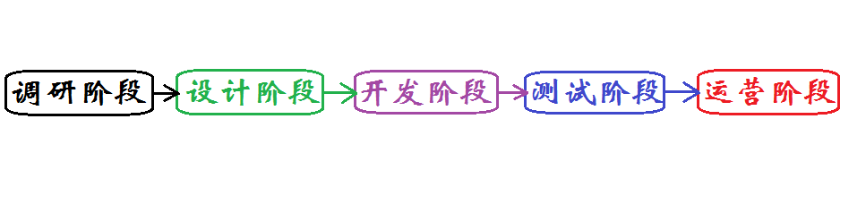

项目生命周期
传统项目生命周期
对于传统软件项目来说，它主要包含以下五个阶段：

1调研阶段
目的：居安思危
人员：相关人员，侧重于产品经理
节点：多角度思路/方案，最后领导拍板
2设计阶段
目的：方案可视化
人员：产品团队主导，开发、测试、运维参与
节点：产品需求文档、项目里程表
3开发阶段
目的：方案运行
人员：开发团队为主，运维团队参与
节点：阶段项目正常运行
4测试阶段
目的：保证项目功能完善
人员：测试团队为主，运维、开发参与
节点：项目功能符合要求
5运营阶段
目的：项目部署+运行维护
人员：运营团队为主、开发/产品团队参与
节点：项目终止、功能迭代等
新型项目生命周期
以用户的需求进化为核心，采用迭代、循序渐进的方法进行软件开发。在敏捷开发中，软件项目在构建初期被切分成多个子项目，各个子项目的成果都经过测试，具备可视、可集成和可运行使用的特征。换言之，就是把一个大项目分为多个相互联系，但也可独立运行的小项目，并分别完成，在此过程中软件一直处于可使用状态

- 计划
- 需求分析
- 设计
- 代码实现
- 测试
- 评估
- 发布
- 支持维护